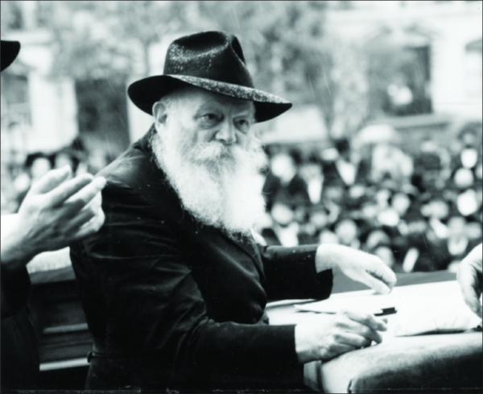

Fiery Lag B’omer Events in 770
Over the years, the auspicious day of Lag B’Omer was often marked by special events, some of them complete surprises, which took place at 770. * Beis Moshiach presents a brief diary of some of these events.
Compiled by Menachem Sharir

Lag B’Omer in the “seventh generation,” is a day devoted to the “chutza.” Thousands of children around theworld take to the streets to march in parades in honor of the holy Tanna, Rabbi Shimon Bar Yochai. Since the 70’s, this day is used to spread the teachings of Chassidus among the hundreds of thousands of people who visit R’ Shimon’s grave in Miron. In Crown Heights, when Lag B’Omer falls out on a Sunday, a grand parade is held for all children of the greater New York area.
The following incidents, compiled from books and diaries that describe the going-on at Beis Chayeinu, describe some of the wondrous things that took place on Lag B’Omer over the years. Ultimately, we hope to participate in the Great Parade with Moshiach at the Third Beis HaMikdash.
5710/1950 READING PANIM AT THE OHEL IN THE POURING RAIN
On Lag B’Omer 5710 there was still no (official) leader of Chabad. Chassidim looked to Ramash who, although he did not formally accept the nesius, did not hesitate to make demands of Anash.
One of the topics he spoke about a lot was spreading the teachings of Chassidus. Among Anash there was the feeling that the focus should be on building up Lubavitch, but the Rebbe felt otherwise. At his farbrengen, upon accepting the Chabad leadership, he cried out in a voice choked with tears, “Avrohom caused the name of Hashem to be proclaimed in the mouths of all passersby.” In the months leading up to that, he repeatedly said, “K’asi Mar, L’K’Sheyafutzu Maayonosecha Chutza” – “Moshiach will come when your [the Baal Shem Tov’s] wellsprings spread outward.” The Rebbe demanded that Anash spread the teachings of Chassidus to all Jews.
The Rebbe agreed to farbreng on Lag B’Omer and spoke about the special quality of this day, the “Mattan Torah of P’nimius HaTorah,” and demanded that Chassidus be disseminated.
This is how people who were there describe it:
“The Rebbe began the farbrengen with the statement of Chazal “there is nothing that is not alluded to in the Torah.” In the teachings of our Rebbeim it is explained that the allusions to Lag B’Omer in the Torah have to do with Yaakov running away from Lavan. Lavan caught up with him and they made a treaty which was cemented by heaping a pile of stones “Eid HaGal HaZeh” (this pile is a witness, “gal” having the same letters as “Lag”).
“Said the Rebbe, Lavan ran after Yaakov to do him harm, but in the Zohar – Rashbi’s book – it explains that the inner reason for Yaakov working in Charan – Hashem’s Charon Af, wrath – was to sift out the holy sparks. Lavan had some sparks left that had not been extricated by Yaakov, which is why he chased after him.
“The lesson here for us is about our avoda. In previous times, people could have erred and thought that learning Chassidus applied only to tzaddikim and elevated people. But now is the time of Ikvisa d’Meshicha, as the Rebbe, my father-in-law said that now is the time of “behold, he [Moshiach] stands behind our walls,” the final time before Moshiach. We’ve already left Charan and have only to finish the final sparks, and therefore, there is no time to which we can postpone the learning of Chassidus. As we have seen in recent years, the Rebbe, my father-in-law, had Chassidus published in Yiddish too, in HaKeria V’HaK’dusha, so that even those with the most meager grasp, those whose language is Yiddish, will understand Chassidus. When we spread Chassidus, then every Jew, even the most simple, will be involved in the study of Chassidus, and we will thereby hasten the true and complete Geula.”
***
“At the end of the farbrengen, the Rebbe said that in the Maaneh Lashon it says, “in the merit of the Tanaim and Amoraim… and in the merit of the tzaddikim who are buried here,” i.e. at the gravesite of the tzaddik, especially the gravesite of the Rebbe, you have all the tzaddikim. Based on this, it would be fitting that tomorrow everyone go to the gravesite of the Rebbe, my father-in-law, Rashbi of the generation, and ask him about children, health and ample livelihood, and all of them ample.”
The next day, Friday afternoon, the Rebbe went to the Ohel, with many of Anash following in buses.
Before the trip, a significant turning point came to pass in Lubavitch history: each member of the community submitted a pidyon nefesh to the Rebbe, which he read afterward at the Ohel. A heavy rain poured down as he stood there, but the Rebbe continued reading them.
5711/1951 THE CHASSIDIM SHUDDERED AT THE SHARP SICHA
Those were days of religious persecution. Tens of thousands of children from Muslim and other countries made aliya. Once in Eretz Yisroel however, they were torn away from their parents, teachers and pure chinuch, and turned against their religion with nary a protest. Only a handful of yeshiva bachurim, including R’ Sholom Dovber Lifschitz and R’ Yisroel Leibov, worked to help them.
The Rebbe, faithful shepherd of his flock, could not restrain his pain. During the Lag B’Omer farbrengen, after explaining the significance of the day, he said the following painful, sharp words:
“The situation today, due to our many sins, is that there are tens, hundreds, and thousands (not just individuals but tens, hundreds, and thousands) of Jewish children whom they want to compel and cut off from Judaism, G-d forbid.
“These children come from homes of G-d fearing, religious people, and even now they want to be G-d fearing and religious, but there are those who want to remove them from under the wings of the Sh’china and force them to repudiate their religion, to transgress the Torah of Hashem and His mitzvos, to the point of heresy, Heaven forefend!
“Since these children are in a situation in which they cannot save themselves and must have outside help, the holy obligation and privilege is upon each one, wherever he may be [even from far away, but the information reached him (through the newspaper, word of mouth and the like), about what is going on miles away] and no matter his situation [even if he has a lack, G-d forbid, regarding children, in 248 limbs and 365 sinews], to do all in his power to save these children!
“If you can do something via peaceful means, well and good, but if peaceful means are not successful, protests must be utilized. If protests are ineffectual, fear tactics need to be used, and if that too is ineffective, then when it comes to danger to life, saving souls from spiritual annihilation, G-d forbid, the rule is that pikuach nefesh sets aside everything!”
The Rebbe went on to say more and he used sharp terminology such as, “We have never had, down to this day, such tzaros and persecutions from ‘those who ruin and destroy you,’ about whom it is said that they ‘go forth from you,’” and, “With activities such as these, not only are they not helping protect the state and the country and the Jews who live in it, on the contrary, they are destroying it!”
The Chassidim shuddered at these words, for they were not used to hearing talk like this. R’ Yoel Kahn, who was a young bachur and in charge of editing the notes taken of what the Rebbe said, was told by the secretary, R’ Chadakov, to quickly write up the sicha since the Rebbe wanted to publish it, or part of it.
This position of the Rebbe explains why he helped and supported Peilim-Yad L’Achim over the years, as well as the urgent need he saw in establishing branches of Reshet Oholei Yosef Yitzchok all over Eretz Yisroel.
5730/1970 THE DAY THE REBBE BEGAN THE BATTLE FOR “MIHU YEHUDI”
Rebbetzin Chaya Mushka once said, “There were three things that made my husband’s beard turn white, and one of them was Mihu Yehudi.”
The Rebbe devoted all his strength and energy to the great battle he waged to amend the Law of Return, so that it would say that a Jew is only someone born to a Jewish mother or someone who converts according to Halacha.
Many don’t realize that the Rebbe began his open battle for Mihu Yehudi on Lag B’Omer 5730. The sicha, which was publicized even in the American media, was said at the parade that took place on that day. It was continued during the surprise farbrengen that took place that evening.
The sicha included an analysis of the problem and explained its severity; an explanation of how it was delaying peace among the Jewish people and the complete Geula. The Rebbe then demanded that the religious ministers resign from the government.
Orthodox Jewry was taken aback by this, for it did not see eye to eye with the Rebbe regarding the severity of the matter. For the first time, the Jewish world was being appraised of the situation, but tragically, it did not quite get it. As a result, the amendment was pushed off so that as of today, thousands of gentiles have been and continue to be registered as Jews in Eretz Yisroel.
That Lag B’Omer was a turning point for the Rebbe’s wars on behalf of Shleimus Ha’Am. It is interesting to note that after the Shabbos Mevarchim farbrengen for the month of Sivan, an announcement was issued that the Rebbe would not be receiving anyone for yechidus until after Shavuos. Rumor had it that this was because the Rebbe was preoccupied with Mihu Yehudi.
5735/1975 SURPRISE FARBRENGEN AND KOS SHEL BRACHA ON LAG B’OMER
As he usually did on this auspicious day, the Rebbe went to the Ohel. He returned about three quarters of an hour before sunset. After davening Mincha, he called for R’ Dovid Raskin and R’ Leibel Groner. After a few minutes, R’ Groner came out and the message spread, “Run downstairs.” The Rebbe immediately came out to farbreng. He washed his hands for this farbrengen as did the crowd.
The sichos at this farbrengen dealt with the special quality of Lag B’Omer and how it differed from 7 Adar. The Rebbe spoke about mivtzaim and the gateway to them – Mivtza Torah. During the farbrengen, the Rebbe said a maamer, “L’Havin Inyan Hilula d’Rashbi.” Then he gave out dollars through the bachurim-shluchim to Australia, and through the Tankistin who worked on the Lag B’Omer mivtzaim, and through N’shei U’Bnos Chabad. After Birkas HaMazon, the Rebbe gave kos shel bracha.
During kos shel bracha, the Rebbe said to R’ Mordechai Mentlick, rosh yeshiva of Tomchei T’mimim 770, “Since when do you have such a big yeshiva?” with a big smile. This was followed by brachos and comments about the qualities of Eretz Yisroel.
At the end of the farbrengen the Rebbe said, “To forestall questions [apparently the Rebbe was referring to the fact that they were farbrenging before Maariv, even though in Shulchan Aruch it says it is forbidden to sit down to a meal until the Omer is counted] we will relate that the Rebbe, my father-in-law, once farbrenged in 5692 on Lag B’Omer at this time. [It was at the Tanaim for his son-in-law, R’ MM Horenstein and his daughter Shaina.] He anticipated the issue of Maariv and s’fira, pointing out that since they were many people they will remind each other, and this reasoning is sufficient.”
It is interesting to note that before Lag B’Omer a note went out to the hanhala of the yeshiva about the behavior of the bachurim on mivtzaim. It said, “To the talmidim of the yeshiva who came from Eretz Yisroel, [even though] there is the heter of the Rambam in Yad HaChazaka, obviously they should sit and learn diligently, observing all the s’darim of the yeshiva punctiliously.”
5746/1986 THE CROWD SANG “WE WANT MOSHIACH NOW” FOR ONE HOUR AND FORTY MINUTES
Dollars were distributed from the moment the Rebbe arrived from his house. This was a relatively new practice which began on 11 Nissan of that year. It lasted 22 minutes.
Many women who wanted a bracha for children—as Lag B’Omer is known as an auspicious day for yeshuos regarding children—were told “b’karov” (soon) and “b’karov mamash” (really soon) or “zara chaya v’kayama” (living, enduring children).
When R’ Yeshaya Hertzl of Kfar Tavor went by, the Rebbe called him back with a smile and said, “You always take for your entire district,” and gave him another dollar and said, “Take for the district.” The Rebbe asked R’ Asher Sasonkin, “Why don’t you smile?”
At 10:10 pm, after returning from the Ohel and davening Maariv, the Rebbe told R’ Groner that there would be a farbrengen in ten minutes. The joy was indescribable. All of 770 was in an uproar, but they managed to set up in time, and when the Rebbe came down everything was in order.
The farbrengen began at 10:25 or so. After a maamer (which was said like a sicha), sichos were said about Ahavas Yisroel. In the third sicha the Rebbe spoke forcefully about the daily shiur of Rambam, “a man should not marry a woman and intend to divorce her,” and connected this to the marriage of the Jewish people and G-d, “that He shouldn’t marry with intentions of divorcing her,” and consequently we need to make a “true commotion,” “Ad Masai?”
The words came from the Rebbe’s heart and penetrated the hearts of the listeners. For an hour and forty minutes they sang, “We Want Moshiach Now,” with ever increasing intensity. In the middle, they screamed “Now, now, now” for about ten minutes. The Rebbe motioned strongly to Meir Abeserah to whistle.
At the end, they began to silence the crowd and then the Rebbe said, “When doing hakafos, it is customary to say, ‘Ad Kan Hakafa Alef.’ The Rebbe, my father-in-law, once said that if they didn’t announce that, they wouldn’t know when to stop and would be unable to continue with the second hakafa. Therefore, if there were to be an “arranging committee,” gabbai or shamash, they should choose someone and appoint him to announce “Ad Kan Hakafa etc.,” so they can think of the next hakafa, until the seventh hakafa. In any case, may this be an immediate preparation to go and greet Moshiach Tzidkeinu.”
The Rebbe urged the opening of new Chabad houses, strengthening old ones, and forming Tzivos Hashem and Tiferes Z’keinim organizations everywhere. Then he spoke at length about Beis Agudas Chassidei Chabad (the replica of 770), which was being built in Kfar Chabad and said the construction should be speeded up – and he himself would contribute money – so that it would be ready by 12-13 Tammuz.
Although this seemed impossible, the Chassidim did it; the building was completed by 12 Tammuz.
5751/1991
Lag B’Omer 5751 was at the start of a new, unique era. Many things occurred on that day, but we’ll focus primarily on the work of the T’mimim to bring Moshiach.
Lag B’Omer is an auspicious day for a bracha for children and forty or so women stood near the mikva, waiting to ask the Rebbe for a bracha. The Rebbe gave them coins for tz’daka and blessed them. He returned from the mikva at 1:30.
The Rebbe returned from the Ohel at 8:38 and at 8:47 he davened Mincha and Maariv. He announced ahead of time that dollars for tz’daka would be distributed after Maariv.
After davening and the gabbai’s announcement, the Rebbe descended from the bima and gave each person a dollar for tz’daka. The Rebbe smiled at some people and at boys and girls; to children who said “Moshiach now” he responded with “amen.”
The distribution took twenty minutes and then the Rebbe put two bills into his Siddur, gave one bill to R’ Binyamin Klein, and turned to the Aron Kodesh. After touching the paroches, another woman showed up who hadn’t received a dollar and the Rebbe took out a dollar from his Siddur and gave it to her. At 9:24 he left the shul as the crowd sang, “Shuva Hashem.”
The crowd continued to dance in shul for a while longer to this niggun.
About a quarter of an hour later, an emergency meeting was held by the “Matteh HaT’mimim HaOlami L’Havoas HaMoshiach.” Nearly all the bachurim gathered, spoke, gave reports of the work done thus far, and planned future activities. Bachurim spoke as well as members of the hanhalos of yeshivos in Crown Heights: R’ Sholom Charitonov of Oholei Torah, R’ Dovid Raskin of 770, and R’ Nachman Schapiro, mashpia in Oholei Torah.
The main points raised at the Kinus were: 1) To continue strengthening the s’darim and everything they had committed to, 2) to thoroughly know the sichos and maamarim on inyanei Moshiach and Geula in the teachings of the Rebbe, 3) to publish chiddushei Torah in these inyanim that would be ready for 28 Sivan (marking fifty years since the Rebbe and Rebbetzin arrived in the US), 4) the T’mimim are “soldiers of the house of Dovid” and everybody wants to know what they are doing and what they are involved in, and therefore, they need to be role models of activities connected with the hisgalus of Moshiach who is in our midst, and cannot be deterred by those who cool off and weaken these activities.
Later on, there were Chassidishe farbrengens for the T’mimim throughout Crown Heights in honor of Lag B’Omer.
Beis Moshiach (staff). "Fiery Lag B’omer Events in 770." Beis Moshiach, no. 877 (April 24, 2013).